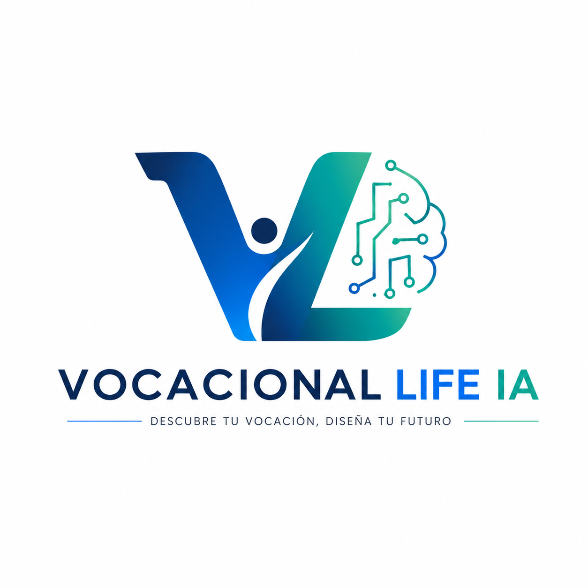

Orientación vocacional · 17–18 años
Respondé situaciones simples de todos los días, sin trucos ni "respuesta correcta". Al final vas a ver hasta 5 áreas de estudio que más te representan, con las carreras concretas de cada una.
Tip: presioná 1-5 para elegir y Enter para continuar.
Resultado del test
Estas son las áreas donde tus respuestas mostraron más afinidad. Dentro de cada una, elegí 1 a 5 carreras concretas para empezar a investigar.
Este resultado nace de tus propias respuestas y sirve como punto de partida para investigar, hablar con profesionales de esas áreas y, si podés, hacer una orientación vocacional profesional más profunda.
El PDF se genera en tu navegador. Al terminar el test también se abre la ventana de impresión automáticamente. Solo el resultado (nombre y áreas afines) se guarda para seguimiento.